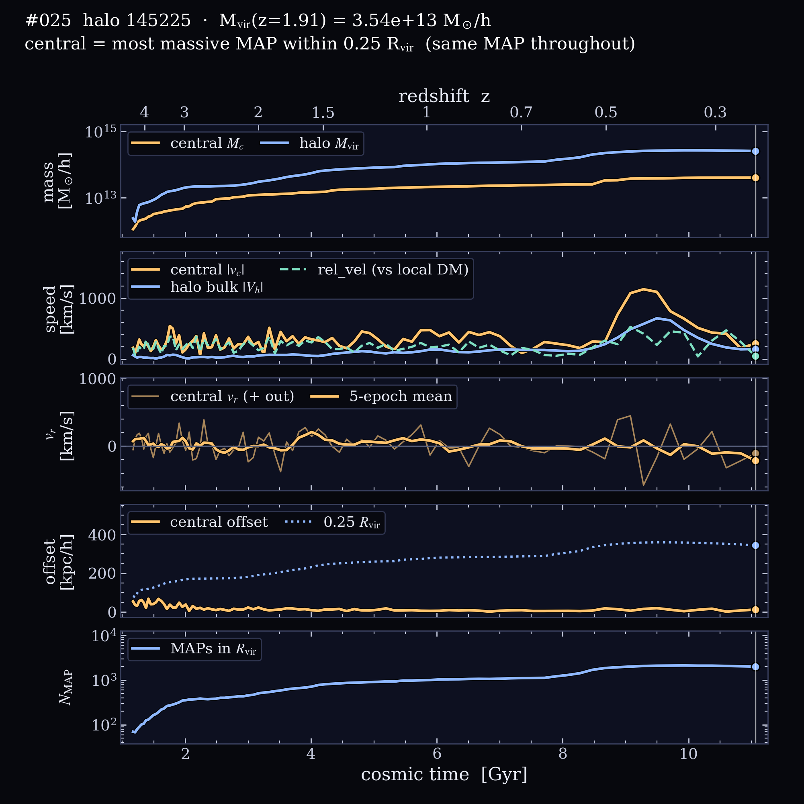

Rank #025 at z = 1.91 · AbacusAurora rockV2 c000 ph390
Halo 145225
At z = 1.91 this is the #25 most massive host, with Mvir = 3.54 × 1013 M☉/h and Rvir = 804 kpc/h, holding 565 MAPs. It grows 107× between z = 5 and 0.22 and reaches half its final mass by z = 0.60. Its largest growth spurt since z = 2 is ×1.48 in 0.59 Gyr (z = 0.57 → 0.49). The 15 × 15 × 5 h−1Mpc slab around it is 2.6× the cosmic mean density (the #4 densest surroundings of the 6 halos here), with 11 other hosts above 1012 M☉/h within 5 h−1Mpc.
Colour schemeDeep-space blue dark matter, maps as small galaxy light profiles.
Central galaxy. The camera circles the halo’s main progenitor, always pointing at its centre. The cyan ring marks the central galaxy (the most massive MAP within 0.25 Rvir). Panels on the right fill in as the movie plays: central and halo mass, speeds, radial velocity, the central’s offset from the halo centre, and the number of MAPs in Rvir.
At z = 1.91
Mvir
3.54 × 1013 M☉/h
Rvir
804 kpc/h
Vmax
816 km/s
Position
(8.5, 16.5, 37.4) h−1Mpc
MAPs in Rvir
565
median MAP Pram
1.91 × 108 ρ̄(km/s)2
Growth, z = 5 → 0.22
Mvir(z = 5)
2.37 × 1012 M☉/h
Mvir(z = 0.22)
2.55 × 1014 M☉/h
half-mass redshift
0.60
largest spurt since z = 2
×1.48 in 0.59 Gyr (z = 0.57 → 0.49)
central mass
1.11 × 1012 → 4.03 × 1013 M☉/h
central offset
median 14, max 69 kpc/h
peak central speed
1145 km/s at z ≈ 0.41
central swaps
0
MAPs in Rvir, z = 0.22
2,014
Environment at z = 1.91
slab density ⟨1+δ⟩
2.58 (15×15×5 h−1Mpc)
hosts > 1012 within 5 h−1Mpc
11
hosts > 1012 within 10 h−1Mpc
24
nearest more massive halo
27.1 h−1Mpc, 3.70 × 1013 M☉/h

Full history. The same panels as the movie, drawn to the end.